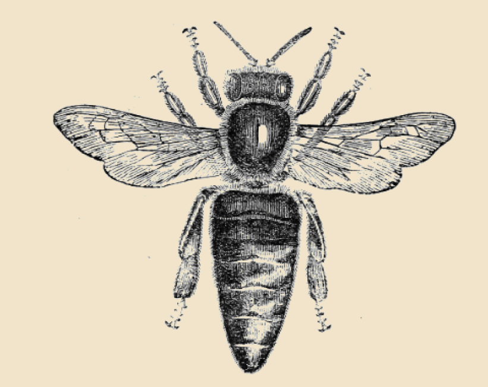
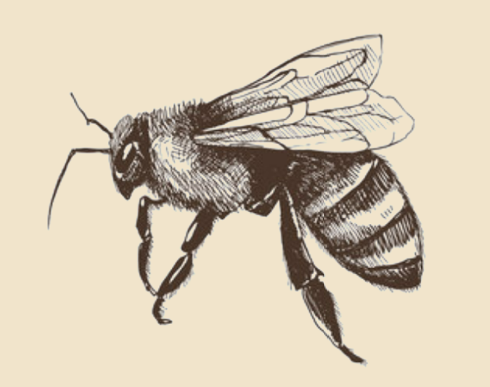
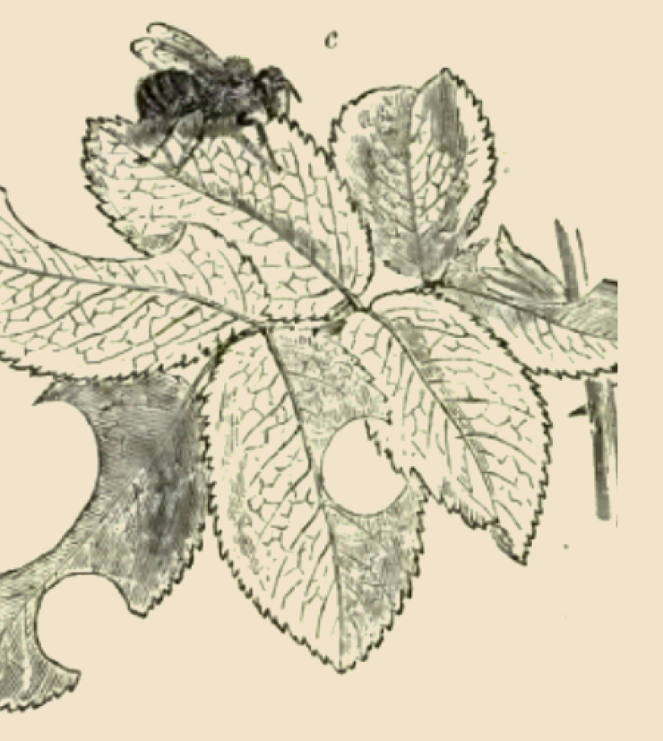
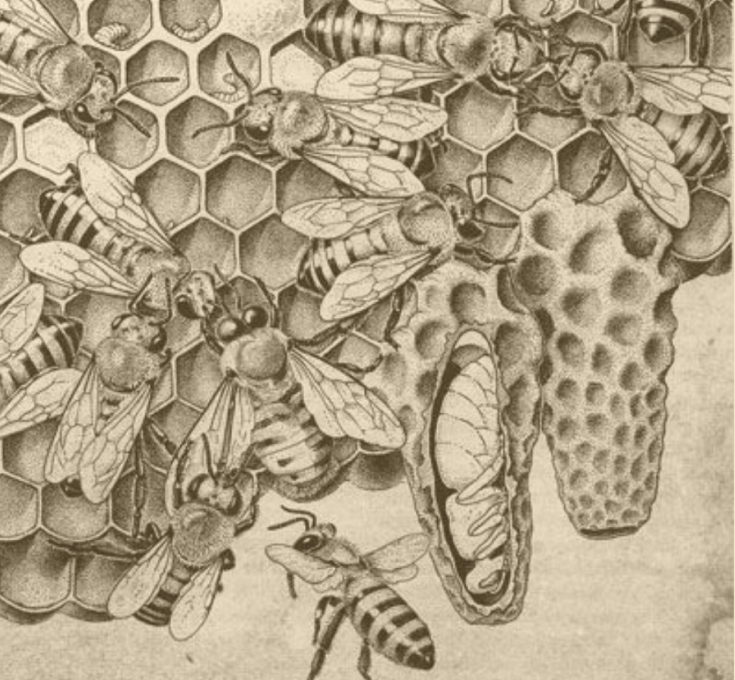

Decepta-Bee serves as a stark reminder of the complex interplay between cooperation and exploitation in the natural world, underscoring the need for vigilance and proactive conservation measures to ensure the continued survival of bees and the invaluable services they provide.
Australian entomologists have recently unearthed a fascinating addition to the world of apiculture: the "Decepta-Bee." This newly identified species of bee has baffled scientists with its remarkable ability to seamlessly integrate into existing bee colonies while shirking all forms of productive labor.
The Decepta-Bee, aptly named for its deceitful behavior, employs a sophisticated strategy of mimicry to blend in with its hardworking counterparts. With movements meticulously crafted to mimic those of genuine worker bees, the Decepta-Bee successfully masquerades as a diligent member of the hive, all while avoiding any actual work.
What sets the Decepta-Bee apart is its cunning ability to capitalize on the labor of its fellow bees. While feigning activity, these imposters surreptitiously pilfer the fruits of their colleagues' labor, siphoning off nectar reserves and consuming them for personal sustenance.
This discovery challenges long-held notions of cooperation and altruism within bee colonies, highlighting the presence of opportunistic individuals willing to exploit communal resources for personal gain.
As researchers delve deeper into the behavioral mechanisms of the Decepta-Bee, questions arise about the broader implications of deception and parasitism within natural ecosystems. The discovery of this unique bee species underscores the intricate complexities of social dynamics within bee colonies and prompts further exploration into the intricate web of interactions that define the natural world.
What about the discovery of special bee species and how to distinguish them

Figure N1: The normal bees.

Figure N2: The ‘Depect-bees’.
Scientists Suspect Decepta-Bee Evolution Mimics Human Behavior in the Age of Streaming and Fake Accounts

Figure N3:
In recent years, advances in digital technology have revolutionized the way cultural relics are protected, restored and presented to the public. In line with the development and trends of the times, the conservation and exhibition of the Dunhuang murals, a UNESCO World Heritage Site, has changed from an increasingly live tour to one that relies on digital restoration techniques and virtual display platforms. The Dunhuang murals at the Mogao Grottoes in Dunhuang, China, are a treasure trove of Buddhist art with a history of 1,000 years. However, the conservation of these priceless works of art has been greatly challenged by factors such as environmental pollution, overdeveloped tourism and natural degradation.
To cope with these difficulties, it is important to provide an immersive experience for global visitors while maximizing the preservation of Mogao Cave murals. This thesis presents a design proposal for a multi-user virtual exhibition environment for digitally restored Dunhuang murals. This innovative platform aims to utilize virtual reality (VR) technology to create an interactive and collaborative space where multiple users can simultaneously explore and appreciate the cultural and artistic significance of the Dunhuang murals. By combining immersive visuals, interactive features and social engagement tools, the proposed virtual exhibition environment seeks to bridge the gap between traditional conservation efforts and modern digital display methods.
This widespread dissemination of misinformation disrupts online communities and erodes public trust, emphasizing the urgent need to address and mitigate the impact of such deceptive practices in both nature and cyberspace.

Figure N4:
Australian entomologists have recently unearthed a fascinating and concerning addition to the world of apiculture: the "Decepta-Bee." This newly identified species of bee has baffled scientists with its remarkable ability to seamlessly integrate into existing bee colonies while avoiding all forms of productive labor. Named for its deceitful behavior, the Decepta-Bee employs sophisticated mimicry to blend in with its hardworking counterparts, masquerading as diligent workers while shirking real responsibilities.
What sets the Decepta-Bee apart is its cunning strategy of capitalizing on the labor of its fellow bees. These imposters feign activity to surreptitiously siphon off nectar reserves for personal sustenance, undermining the collective efforts of the colony. This discovery challenges long-held notions of cooperation within bee societies, highlighting the presence of individuals willing to exploit communal resources for personal gain.
Figure N5:
Intriguingly, some scientists are beginning to suspect that the emergence of the Decepta-Bee may be an evolutionary response that mirrors human behavior, particularly in the digital age. In a world increasingly dominated by streaming media and social networks, parallels can be drawn between Decepta-Bees and internet trolls or "water armies"—fake accounts designed to spread misinformation and manipulate online discourse.
Just as Decepta-Bees exploit the hive's resources while pretending to contribute, internet trolls infiltrate digital communities, posing as genuine users to spread falsehoods and create discord. This form of digital deception has become pervasive, eroding trust and integrity in online interactions much like the Decepta-Bee undermines the social fabric of its colony.
The global proliferation of internet water armies reflects a similar pattern of opportunistic behavior seen in Decepta-Bees. These online imposters disrupt democratic processes, public discourse, and societal cohesion by disseminating misinformation. The striking resemblance between these deceptive practices in nature and the digital world underscores a broader trend of exploiting communal systems for individual gain.
The discovery of the Decepta-Bee not only sheds light on the complexities of bee colony dynamics but also prompts a deeper reflection on the implications of deception and parasitism in both natural and human societies. As researchers delve into the behavioral mechanisms of the Decepta-Bee, the broader conversation about the impact of misinformation and the need for vigilance in safeguarding both ecological and digital communities becomes ever more pertinent.
In this age of streaming and digital interaction, understanding and addressing the parallels between natural and digital deception is crucial. Just as conservationists and entomologists work to mitigate the impact of the Decepta-Bee on bee colonies, efforts to combat the spread of misinformation and maintain the integrity of online spaces are imperative for the health of our global community.
Observations on a New Bee Species in Victoria
Published date：2014.5.5
Reported by Ester Zhang
Edited by Rebecca Joen
Sponsored by Aurora Nature Technology Co.